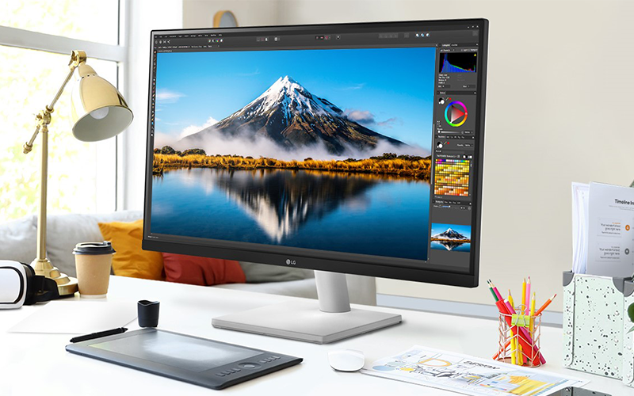

Free monitor & screen recycling with full compliance
If your organisation is about to upgrade your computer monitors or display screens, it's essential to consider how you will dispose your old ones in compliance with WEEE regulations. We offer nationwide collection and recycling of all your computer monitors of any size, brand, or quantity.
BOOK A COLLECTIONFree collections when you recycle at least 10 laptops, PCs & servers (any combination). It's also free to recycle almost all waste IT with us.

Eco-friendly monitor disposal
We Recycle All Types of Monitors & Display Screens
As technology continues to evolve, businesses regularly upgrade their monitors and display equipment. At SavingTech, we help organisations responsibly dispose of outdated, unwanted and faulty screens, prioritising reuse and recycling wherever possible.
We accept a wide range of displays, including LCD, LED, ultrawide, touchscreen, digital signage and large-format advertising screens. Whether you're upgrading office workstations, refurbishing retail premises or replacing commercial display systems, we can help manage the disposal process.
Sustainable Monitor Recycling
Monitors contain valuable materials that can be recovered and reused. Through responsible recycling, components such as plastics, circuit boards, metals, cables and glass can be separated and processed for material recovery, helping reduce electronic waste and conserve natural resources.
Where suitable, working monitors may also be prioritised for reuse, extending their lifespan and reducing the need for new equipment.
Affordable Monitor & Display Collection
We offer monitor and display collection services for businesses, schools, charities and other organisations. Free collection may be available for qualifying quantities, depending on the equipment and collection requirements.
All applicable waste electrical and electronic equipment is handled in accordance with relevant WEEE regulations, helping your organisation meet its disposal responsibilities.
We collect all brands and types of monitors, displays, screens and televisions
We offer nationwide collection and recycling of all your computer monitors, display & advertising screens.
Monitors & televisions
All types: LCD, TFT, LED, OLED, IPS, TN, VA, curved, ultrawide, 4K, gaming, touch screen, portable, HDR, professional, broadcast.
All brands: Samsung, LG, Sony, Panasonic, TCL, Hisense, Vizio, Philips, Sharp, Toshiba, Dell, HP, Lenovo...
Commercial displays
Advertising & merchandising screens: All sizes of digital advertising / experience / merchandising screens typical of those used at events, in-store retail, and experiential destinations such as theme parks and stadiums.
We charge to recycle some types of display
All charges are ex-VAT:
- Displays up to 30", with working screens: FREE
- Displays up to 30", with cracked or broken screens: £7
- Displays over 30", working or broken/cracked: £1/inch
- Interactive whiteboards/smartboards (all sizes, working or broken): £1/inch
We do not accept CRT screens
We won't be able to collect the older style of cathode-ray tube screens typical of those used in old televisions and monitors, as they require special handling owing to the hazardous materials within them.
Ready to book?
Frequently asked questions
Is monitor and screen recycling free?
Working displays up to 30 inches can be recycled free of charge. Larger displays and screens that are damaged may incur a recycling charge.
Are there charges for broken or larger screens?
Yes. A cracked or broken display up to 30 inches is charged at £10. Displays over 30 inches are charged at £1 per inch, whether working or damaged. Interactive whiteboards and smartboards are also charged at £1 per inch, regardless of condition.
Do you accept CRT monitors?
No. We do not currently collect CRT screens because they require specialist handling due to the materials they contain.
What types of monitors can you recycle?
We accept LCD, TFT, LED, OLED, curved, ultrawide, 4K, touchscreen and professional broadcast monitors, as well as commercial advertising and merchandising displays, regardless of brand.
What happens to monitors after collection?
We first assess equipment for potential reuse. Monitors that cannot be reused are sent for responsible recycling, where materials such as plastics, circuit boards and cables can be recovered.
Do you provide certificates for monitor recycling?
Yes. You'll receive a Certificate of Destruction and a certificate of carbon offset for the collection, and enhanced data destruction with detailed audit logs is available on request.